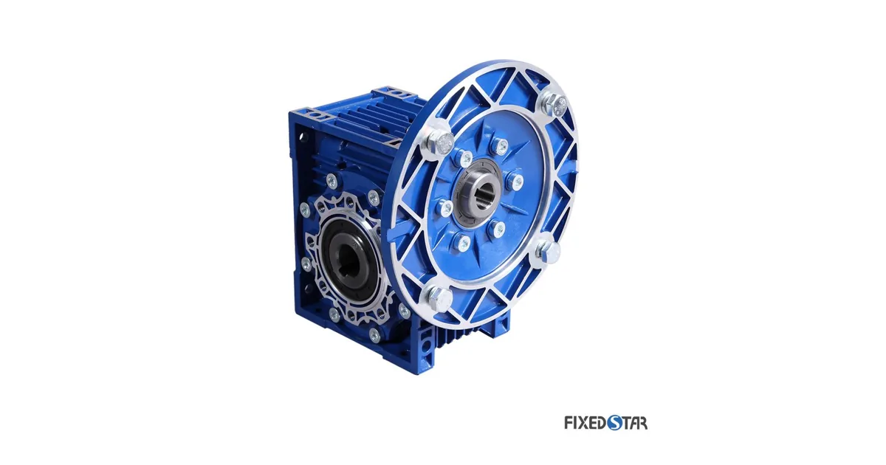

Собственное производствоПромышленные редукторы для производителей оборудования•Отгрузка по всей России•Аналоги SEW, NORD, Bonfiglioli без переделки рамы•Расчёт и КП за 15 минут•Гарантия 36 месяцевПромышленные редукторы для производителей оборудования•Отгрузка по всей России•Аналоги SEW, NORD, Bonfiglioli без переделки рамы•Расчёт и КП за 15 минут•Гарантия 36 месяцев
Монтажное положение — ориентация корпуса редуктора KEB в пространстве. Задаётся при заказе, указывается на шильде и определяет объём заливаемого масла, уровень и назначение пробок в корпусе.
Что такое монтажное положение keb
Монтажное положение — ориентация корпуса редуктора KEB в пространстве. Задаётся при заказе, указывается на шильде и определяет объём заливаемого масла, уровень и назначение пробок в корпусе.
Термин относится к марке KEB, но сам по себе универсален: так же он понимается для редукторов любого производителя, включая наши изделия серии ZR.
Параметры и типовые значения
Типовые обозначения положений
Обозначение
Положение
Особенность
M1 (B3)
горизонтальное на лапах
базовый объём масла
M2
горизонтальное с поворотом
смещается уровень
M3
горизонтальное, фланец вверх
увеличенный объём
M4 (V1)
вертикальное, вал вниз
максимальный объём
M5 (V3)
вертикальное, вал вверх
риск подтёка сверху
M6
боковое
уровень по каталогу
Отличие от монтажной позиции двигателя
Монтажное положение редуктора и монтажное исполнение двигателя по ГОСТ (IM B3, IM B5, IM V1) — разные вещи, хотя обозначения похожи. Первое определяет уровень масла в редукторе, второе — способ крепления двигателя. У мотор-редуктора указывают оба.
Влияние на подбор и эксплуатацию
Объём и уровень масла: при смене положения объём меняется, иногда существенно.
Расположение сапуна: он должен быть в верхней точке, иначе масло выдавит наружу.
Доступ к пробкам: сливная пробка должна оказаться в нижней точке нового положения.
Смазка верхних ступеней: в вертикальных исполнениях разбрызгивание не всегда достаёт до верхней пары, поэтому объём увеличивают.

Редуктор KEB: червячный исполнениеПодбор привода по параметрам
Какие данные собрать перед заказом
Что нужно инженеру для подбора и где это взять
Параметр
Где взять
Зачем нужен
Полное обозначение с шильда
табличка на корпусе редуктора
определяет серию KEB и типоразмер
Мощность и обороты двигателя
шильд двигателя или паспорт привода
задаёт входную ступень и запас
Обороты на выходе
технолог или расчёт по механизму
через них считается передаточное число
Монтажное положение
по факту установки на объекте
определяет уровень масла и расположение пробок
Присоединительные размеры
замер или габаритный чертёж
главное условие взаимозаменяемости
Характер нагрузки и режим
технолог, паспорт механизма
через него выбирается сервис-фактор
Как это проверяется на практике
На производстве термин перестаёт быть теорией в двух точках: при подборе привода и при разборе отказа. В первом случае величину закладывают в расчёт заранее, во втором — восстанавливают по факту, чтобы понять, почему узел не дожил до расчётного ресурса. Поэтому её стоит фиксировать в паспорте привода и в журнале эксплуатации: через год эти записи отвечают на вопросы быстрее, чем разборка.
Если параметр не задокументирован, его восстанавливают по косвенным признакам — обозначению с шильда, фактическому режиму работы, характеру износа деталей. Это рабочий путь, но он дольше и точность ниже. Мы просим исходные данные сразу: так расчёт занимает часы, а не дни.
По изделиям собственного производства ZR все ключевые величины мы фиксируем в паспорте и передаём вместе с редуктором — вместе с гарантией 36 месяцев.
Не уверены в подборе? Пришлите фото шильдика на zr@zavod-red.ru — инженер прочитает обозначение, сверит присоединительные размеры и пришлёт расчёт. Или соберите вариант сами в калькуляторе подбора: там задаются диапазоны по мощности, оборотам, моменту и передаточному числу.
Инженерам и проектировщикам. Если вы закладываете привод в проект — у нас действует партнёрская программа: 5% с заказа. Подробности на странице производителям оборудования.
Частые вопросы
Монтажное положение KEB — глоссарий редукторов — технический параметр, который учитывается при подборе, замене и эксплуатации промышленных редукторов и мотор-редукторов. Правильное понимание этого параметра помогает избежать ошибок при заказе аналога и продлить срок службы привода.
Можно ли изменить монтажное положение на объекте?
Можно, но с пересчётом объёма масла и перестановкой пробок и сапуна. Иначе верхняя ступень останется без смазки.
Где указано положение?
На шильде редуктора и в паспорте изделия.
Что будет, если положение не совпадает с заказанным?
Уровень масла окажется неверным: либо голодание верхних узлов, либо вспенивание и перегрев.
Влияет ли положение на цену?
На цену — обычно нет, на срок изготовления и объём заливки — да.
Нужно ли указывать положение в запросе?
Обязательно. Вместе с обозначением с шильда это половина корректного подбора.
Почему монтажное положение важно при заказе?
Монтажное положение определяет расположение пробок, сапуна и уровень масла. Неправильно указанное положение приведёт к течи масла или масляному голоданию — редуктор выйдет из строя.
Как определить монтажное положение по старому редуктору?
Посмотрите на шильдик — там указана маркировка (M1, M2, M3, M4, M5, M6). Если шильдика нет — сфотографируйте редуктор как он стоит, инженер определит.